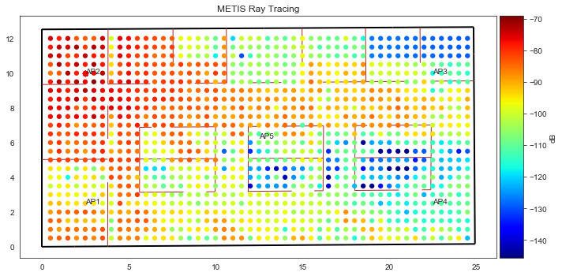
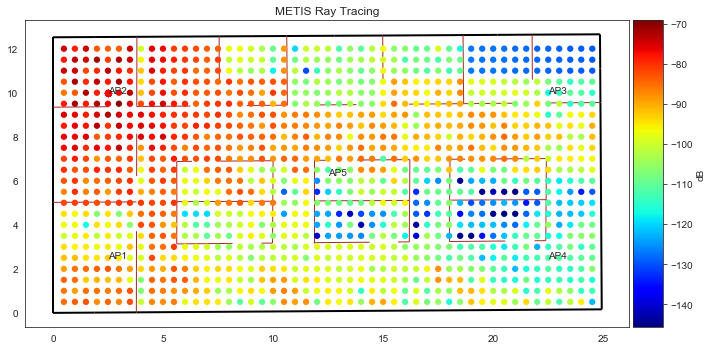
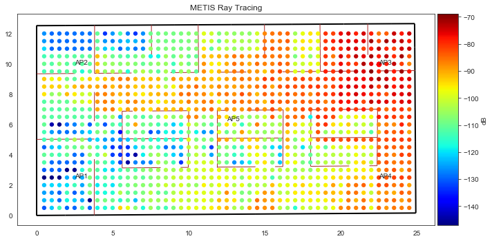
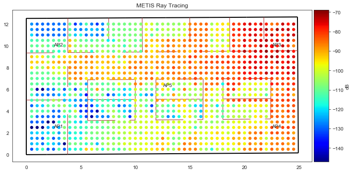
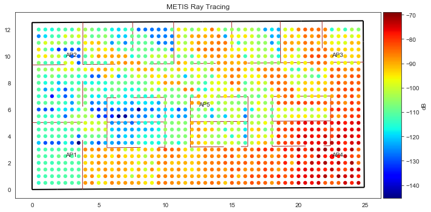
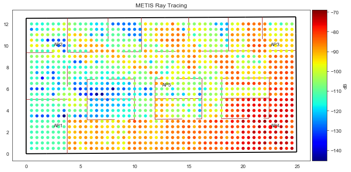
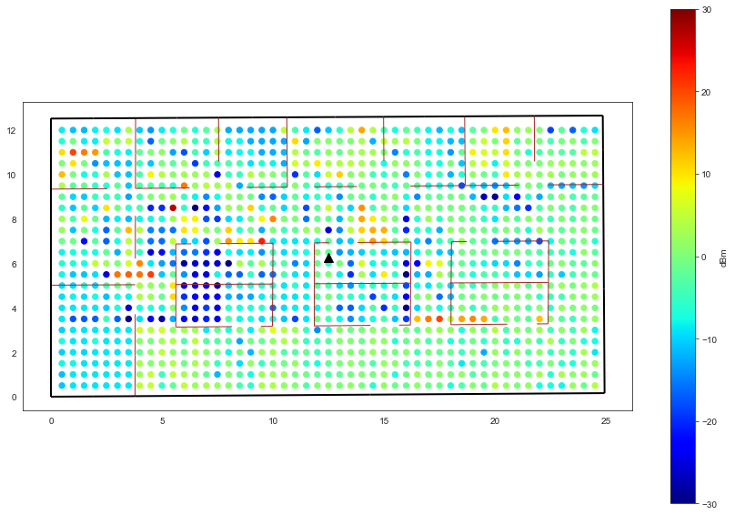
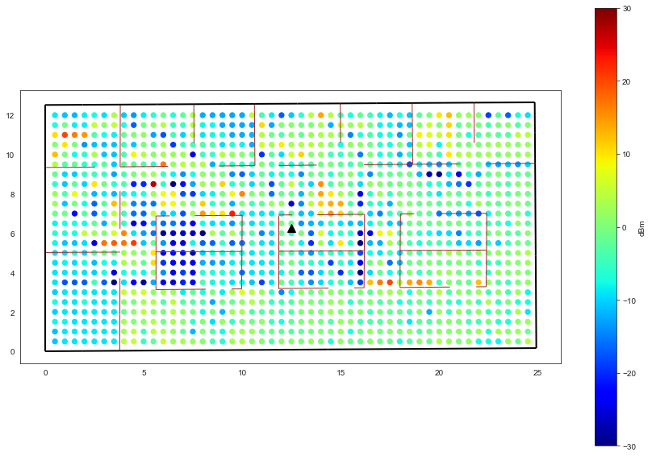
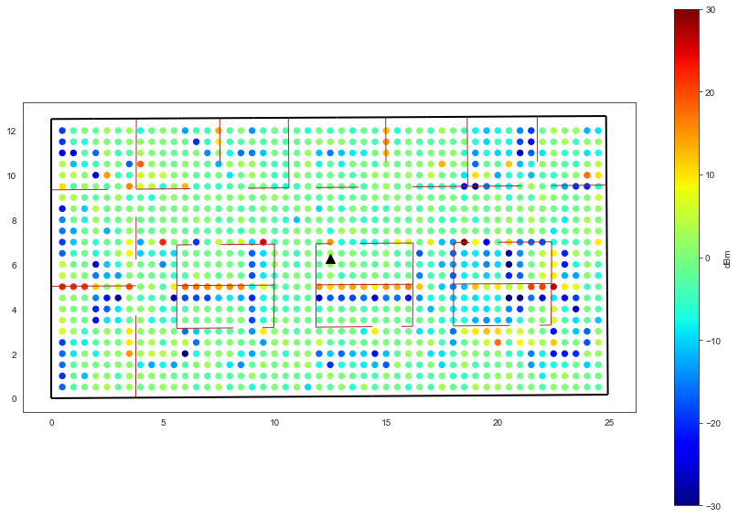
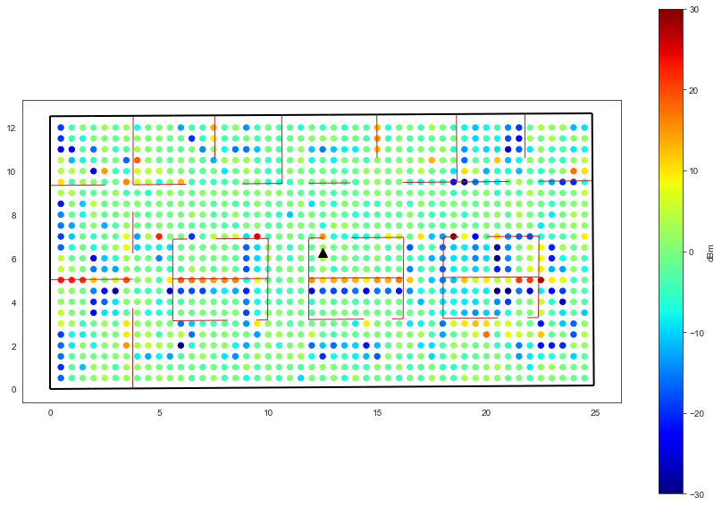

! LANG=en date
Fri Feb 1 18:08:11 CET 2019
from pylayers.antprop.coverage import *
import pandas as pd
%matplotlib inline
Motley Keenan Method Applied on TC1 METIS environment¶
In this section we compare Motley Keenan coverage method against the ray tracing simulation from METIS project, meaning it is only accounting for the direct path with the METIS ray tracing data.
In a first place we read the simulation data provided by the METIS project METIS Data
ldf contains a dataframe of data for each access point.
def readdata(filename):
with open(filename) as fd:
lis = fd.readlines()
data = lis[8:-1]
for d in data:
d = d.replace('\r\n','')
lvs = d.split(' ')
r = np.array([eval(x) for x in lvs])
try:
tab = np.vstack((tab,r))
except:
tab = r
df = pd.DataFrame(data=tab,columns=['xap','yap','zap','xue','yue','zue','pg'])
return(df)
fap1 = basename+'/meas/Metis/TC1_5APs_1176UEs_75cm_height_50cm_sampling_2metis/tc1_ap1_raytrace.txt'
fap2 = basename+'/meas/Metis/TC1_5APs_1176UEs_75cm_height_50cm_sampling_2metis/tc1_ap2_raytrace.txt'
fap3 = basename+'/meas/Metis/TC1_5APs_1176UEs_75cm_height_50cm_sampling_2metis/tc1_ap3_raytrace.txt'
fap4 = basename+'/meas/Metis/TC1_5APs_1176UEs_75cm_height_50cm_sampling_2metis/tc1_ap4_raytrace.txt'
fap5 = basename+'/meas/Metis/TC1_5APs_1176UEs_75cm_height_50cm_sampling_2metis/tc1_ap5_raytrace.txt'
lfile = [fap1,fap2,fap3,fap4,fap5]
ldf = []
for k,f in enumerate(lfile):
df = readdata(f)
ldf.append(df)
# For AP1
ldf[0].head()
| xap | yap | zap | xue | yue | zue | pg | |
|---|---|---|---|---|---|---|---|
| 0 | 2.5 | 2.5 | 2.85 | 0.5 | 0.5 | 0.75 | -74.393294 |
| 1 | 2.5 | 2.5 | 2.85 | 0.5 | 1.0 | 0.75 | -77.736247 |
| 2 | 2.5 | 2.5 | 2.85 | 0.5 | 1.5 | 0.75 | -73.739544 |
| 3 | 2.5 | 2.5 | 2.85 | 0.5 | 2.0 | 0.75 | -82.514351 |
| 4 | 2.5 | 2.5 | 2.85 | 0.5 | 2.5 | 0.75 | -86.828248 |
!cat $BASENAME/ini/coverage/TC1_METIS_coverage.ini
[grid]
nx = 40
ny = 20
boundary = [0,0,25,12.5]
; possible mode : zone , file, full , zone
mode = file
file = tc1_metis_grid.ini
[layout]
filename = TC1_METIS.lay
;0 40 0 15
;filename = W2PTIN.ini
;filename = Lstruc.str
[ap]
1 = {'name':'AP1','wstd':'generic','p':(2.5,2.5,2.85),'PtdBm':0,'chan':[1],'on':True,'ant':'Omni','phideg':0}
2 = {'name':'AP2','wstd':'generic','p':(2.5,10,2.85),'PtdBm':0,'chan':[1],'on':False,'ant':'Omni','phideg':0}
3 = {'name':'AP3','wstd':'generic','p':(22.5,10,2.85),'PtdBm':0,'chan':[1],'on':False,'ant':'Omni','phideg':0}
4 = {'name':'AP4','wstd':'generic','p':(22.5,2.5,2.85),'PtdBm':0,'chan':[1],'on':False,'ant':'Omni','phideg':0}
5 = {'name':'AP5','wstd':'generic','p':(12.5,6.25,2.85),'PtdBm':0,'chan':[1],'on':False,'ant':'Omni','phideg':0}
[rx]
temperaturek = 300
noisefactordb = 0
[show]
show = True
C = Coverage('coverage/TC1_METIS_coverage.ini')
Warning Unable to read graph Gr
Warning Unable to read graph Gw
print(C.grid.shape)
(1176, 2)
def plotingAP(iap):
idxf = C.dap[iap].s.fcghz.shape[0]//2
data = C.CmWp[idxf,:,0]
p = C.dap[iap]['p'][0:2]
ptr= p-C.grid
d =np.sqrt(np.sum(ptr*ptr,axis=1))
plt.figure(figsize=(8,5))
plt.semilogx(d,10*np.log10(data),'.b', label='PyLayers Simulation (Multi Wall)')
plt.semilogx(d,ldf[iap-1]['pg'].values,'.r', label='Metis Simulation AP1 (Ray Tracing)',alpha=0.5)
plt.xlabel('distance (meters)',fontsize=14)
plt.ylabel('Path Loss(dB)')
dnn = d[np.where(d>0)]
L = 32.4+ 20*np.log10(C.fGHz[idxf])+ 20*np.log10(dnn)
plt.semilogx(dnn,-L,'g',label='Free Space Path Loss')
plt.legend()
fig = plt.figure()
err = ldf[iap-1]['pg'].values-10*np.log10(data)
plt.subplot(121)
plt.plot(d,err,'.b')
plt.xlabel('distance (meters)',fontsize=14)
plt.ylabel('error (dB)')
plt.subplot(122)
plt.hist(err,40)
plt.xlabel('error (dB)',fontsize=14)
plt.figure(figsize=(15,10))
plt.scatter(x=C.grid[:,0], y=C.grid[:,1], c=err, s=40, cmap=cm.jet, vmin=-30, vmax=30)
plt.plot(df['xap'][1175],df['yap'][1175],'^k',ms=10)
plt.title('Difference between the 2 methods (RT vs Motley Keenan) (dB)')
cbar=plt.colorbar()
cbar.ax.set_ylabel('dBm')
plt.axis('equal')
ax = plt.gca()
f,a=C.L.showG('s',ax=ax)
AP1¶
C.dap[1]['on']=True
C.dap[2]['on']=False
C.dap[3]['on']=False
C.dap[4]['on']=False
C.dap[5]['on']=False
tic = time.time()
C.cover(snr=False,sinr=False)
toc=time.time()
print('Elapsed time :',toc-tic)
C.ref=ldf[0]['pg'].reshape(1,1176,1)
Elapsed time : 6.329138278961182
/home/uguen/anaconda2/envs/pylayers/lib/python3.5/site-packages/ipykernel_launcher.py:11: FutureWarning: reshape is deprecated and will raise in a subsequent release. Please use .values.reshape(...) instead
# This is added back by InteractiveShellApp.init_path()
f,a = C.show(figsize=(10,5), typ='pr' , title="PyLayers MultiWall", scale=40, f=2)
a.axis("on")
f,a = C.show(figsize=(10,5), typ='ref' , title="METIS Ray Tracing", scale=40)
a.axis("on")
(-1.2465500000000003, 26.177550000000004, -0.63265000000000005, 13.28565)
The next figure shows the representation of the full coverage w.r.t range in a log/log scale.
plotingAP(1)
<matplotlib.figure.Figure at 0x7ff1bfdba748>
AP2¶
C.dap[1]['on']=False
C.dap[2]['on']=True
tic = time.time()
C.cover()
toc=time.time()
print('Elapsed time :',toc-tic)
C.ref=ldf[1]['pg'].reshape(1,1176,1)
Elapsed time : 6.219014883041382
/home/uguen/anaconda2/envs/pylayers/lib/python3.5/site-packages/ipykernel_launcher.py:7: FutureWarning: reshape is deprecated and will raise in a subsequent release. Please use .values.reshape(...) instead
import sys
f,a = C.show(figsize=(10,5), typ='pr' , title="PyLayers MultiWall", scale=40, f=2)
a.axis("on")
f,a = C.show(figsize=(10,5), typ='ref' , title="METIS Ray Tracing", scale=40)
a.axis("on")
(-1.2465500000000003, 26.177550000000004, -0.63265000000000005, 13.28565)
 

plotingAP(2)

<matplotlib.figure.Figure at 0x7ff1c0335cc0>
AP3¶
C.dap[2]['on']=False
C.dap[3]['on']=True
tic = time.time()
C.cover()
toc=time.time()
print('Elapsed time :',toc-tic)
C.ref=ldf[2]['pg'].reshape(1,1176,1)
Elapsed time : 19.30396866798401
/home/uguen/anaconda2/envs/pylayers/lib/python3.5/site-packages/ipykernel_launcher.py:7: FutureWarning: reshape is deprecated and will raise in a subsequent release. Please use .values.reshape(...) instead
import sys
f,a = C.show(figsize=(10,5), typ='pr' , title="PyLayers MultiWall", scale=40, f=2)
a.axis("on")
f,a = C.show(figsize=(10,5), typ='ref' , title="METIS Ray Tracing", scale=40)
a.axis("on")
(-1.2465500000000003, 26.177550000000004, -0.63265000000000005, 13.28565)
 

plotingAP(3)
<matplotlib.figure.Figure at 0x7ff1bdeec748>
AP4¶
C.dap[3]['on']=False
C.dap[4]['on']=True
tic = time.time()
C.cover()
toc=time.time()
print('Elapsed time :',toc-tic)
C.ref=ldf[3]['pg'].reshape(1,1176,1)
Elapsed time : 19.5051486492157
/home/uguen/anaconda2/envs/pylayers/lib/python3.5/site-packages/ipykernel_launcher.py:7: FutureWarning: reshape is deprecated and will raise in a subsequent release. Please use .values.reshape(...) instead
import sys
f,a = C.show(figsize=(10,5), typ='pr' , title="PyLayers MultiWall", scale=40, f=2)
a.axis("on")
f,a = C.show(figsize=(10,5), typ='ref' , title="METIS Ray Tracing", scale=40)
a.axis("on")
(-1.2465500000000003, 26.177550000000004, -0.63265000000000005, 13.28565)
 

plotingAP(4)
 

<matplotlib.figure.Figure at 0x7ff1bffd2860>
AP5¶
C.dap[1]['on']=False
C.dap[2]['on']=False
C.dap[3]['on']=False
C.dap[4]['on']=False
C.dap[5]['on']=True
tic = time.time()
C.cover(snr=False,sinr=False)
toc=time.time()
print('Elapsed time :',toc-tic)
C.ref=ldf[4]['pg'].reshape(1,1176,1)
Elapsed time : 0.19188904762268066
/home/uguen/anaconda2/envs/pylayers/lib/python3.5/site-packages/ipykernel_launcher.py:11: FutureWarning: reshape is deprecated and will raise in a subsequent release. Please use .values.reshape(...) instead
# This is added back by InteractiveShellApp.init_path()
f,a = C.show(figsize=(10,5), typ='pr' , title="PyLayers MultiWall", scale=40, f=2)
a.axis("on")
f,a = C.show(figsize=(10,5), typ='ref' , title="METIS Ray Tracing", scale=40)
a.axis("on")
(-1.2465500000000003, 26.177550000000004, -0.63265000000000005, 13.28565)
plotingAP(5)
 

<matplotlib.figure.Figure at 0x7ff1c0104c88>